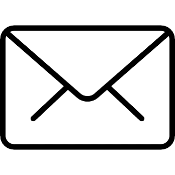

DJESSAN BI GNANAMBIN JUNIOR
 Né le 26 Octobre 1997
Né le 26 Octobre 1997
BANTIFLA_BONON
 juniordjessan@gmail.com
+225 0778946284/0153878786
COMPÉTENCES
Logiciel
Excel, Word, Powerpoint,Outlook, Photoshop,
Illustrator, Indesign, Adobe XD, Dreamweaver
Wordpress, Drupal, Github Desktop
Visual Studio et autres
Langages de Programmation
HTML, CSS, JAVASCRIPT, PHP, BOOTSTRAP
Langues
Français: 
Anglais:
Allemand:
FORMATIONS
Mai 2020 - Mai 2021
7 mois
Fév.2018 - Nov.2019
1 an 11 mois
Sept.2015 - Juin2016
10 mois
Sept.2011 - Juin2012
10 mois
MASTER en cours ... Abidjan, Côte d'Ivoire
ISN- Business et Communication Digitale
(BCD)-UVCI
LICENCE Abidjan, Côte d'Ivoire
ISN- Développement d'Applications
et E-Services-UVCI
BAC D Daloa, Côte d'Ivoire
Lycée Moderne 5 de Daloa
BEPC Daloa, Côte d'Ivoire
Collège Moderne de Daloa
EXPÉRIENCES PROFÉSSIONNELLES
Mars 2015 - Nov.2016
1 an 10 mois
Mai 2018 - Présent
3 ans 3 mois
Janv.2020 - Mars2020
3 mois
Avril 2020 - Mars 2021
1 an
Mars 2021 - Juin 2021
4 mois
Mai 2021 - Juillet 2021
3 mois
MEMBRE ACTIF Abidjan, Côte d'Ivoire
AIBEF-MAJ
RESPONSABLE INFORMATIQUE Abidjan, Côte d'Ivoire
DEZ CONSTRUCTION
WEBMASTER (Stage) Abidjan, Côte d'Ivoire
VERMEILLE COMMUNICATION
DIRECTEUR SERVICES
INFORMATIQUES Abidjan, Côte d'Ivoire
VERMEILLE COMMUNICATION
CONSEILLER CLIENT DIGITAL Abidjan, Côte d'Ivoire
FAZOLCO CORPORATION &
DAME SERVICES
OUVRIER CHEZ NANO Abidjan, Côte d'Ivoire
(Industrie de Fabrication de mouchoir)
CENTRE D'INTÉRÊT
Loisirs : vice-président Jeunesse et Chantre des Eglises MIPDRD-CI
Sports : Pratique régulière du football et un peu du Basket-Ball
Créations : Site officiel de vermeille Communication, blogs, pages (Facebook, Intagram, LinkedIn
et autres) sponsorisée pour entreprise et pour soi-même.
Présentation : Personne très sympathique et
courtoise, mes objectifs je les fixe selon le travail qui m’est attribué, courageux, très dévoué pour un
travail excellent et parfait. Ma mission personnelle au sein de votre entreprise serait de faire une
hausse du chiffre d’affaire précédent.